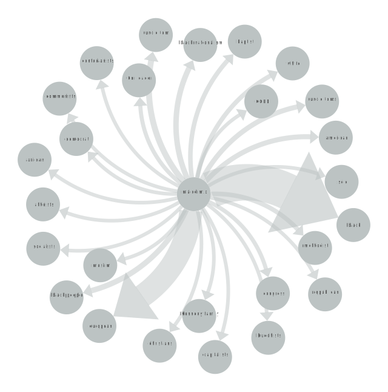
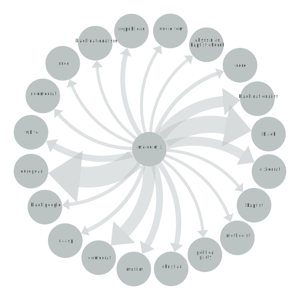

MALCOM X
POSITIVE OR NEGATIVE RHETORICAL ACTION
Brief Explanation of SVG.
Brief explanation of findings.
"MESSAGE TO THE GRASSROOTS"
In "Message to the Grassroots," Malcolm X delivered a powerful speech to a Black nationalist organization in Detroit. He emphasized the importance of Black people uniting and organizing themselves to fight for their rights. Malcolm X argued that the Black community needed to become self-sufficient and self-reliant, rather than relying on the government or other groups for support. He encouraged Black people to embrace their heritage and culture and reject the assimilation into white American society.
NETWORK GRAPH
EXPLANATION
INSERT INFO ABOUT GRAPH
"THE BALLOT OR THE BULLET"
In "The Ballot or the Bullet," Malcolm X urged Black people to use their voting power to demand change and to hold politicians accountable for their actions. He argued that the Black community should not be beholden to one political party and should instead use their vote strategically to support candidates who will work towards their interests. Malcolm X also warned that if the government continued to ignore the demands of the Black community, they would have to resort to more drastic measures to achieve their goals.
NETWORK GRAPH
EXPLANATION
INSERT INFO ABOUT GRAPH